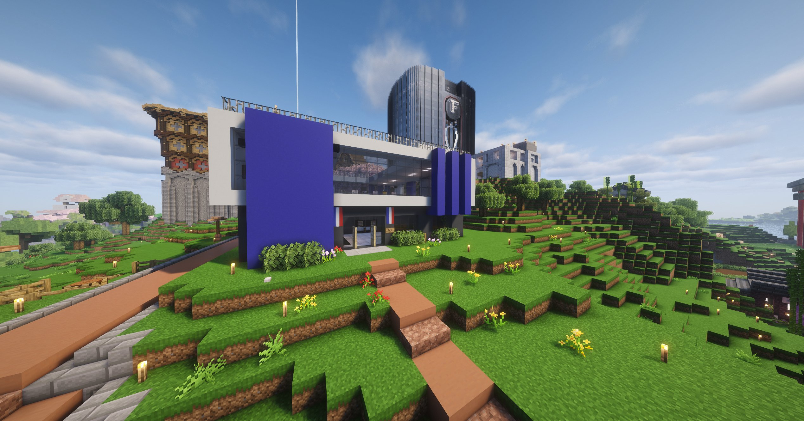

SSIAP nommé Commissaire, Henri promu Capitaine : la police de Karminéa se renforce
Deux promotions historiques pour les forces de l'ordre. Dans un contexte exigeant, deux figures incontournables de la sécurité montent en grade.

C'est une journée historique pour les forces de l'ordre de Karminéa. Deux figures bien connues des citoyens viennent d'être officiellement promues à de nouveaux grades, marquant une nouvelle étape dans l'organisation de la police de la ville.
SSIAP accède au rang de Commissaire
SSIAP, figure incontournable de la sécurité à Karminéa, a été officiellement nommé Commissaire de police. Cette promotion vient récompenser un parcours marqué par un engagement sans faille dans le maintien de l'ordre sur le territoire. À la tête des opérations les plus sensibles — de la capture de révolutionnaires à la gestion de crises majeures — SSIAP a démontré à maintes reprises sa capacité à gérer des situations complexes. Avec ce nouveau grade, il prend une place encore plus centrale dans la hiérarchie policière de Karminéa.
Henri élevé au grade de Capitaine
Henri, lui aussi bien connu des habitants pour son implication sur le terrain, obtient le grade de Capitaine. Présent dans les moments les plus critiques, il s'est imposé comme un élément fiable et déterminé au sein des forces de l'ordre. Cette promotion consacre son rôle de relais entre le terrain et le commandement, et lui confère désormais de nouvelles responsabilités au sein de la structure policière.
Une police qui se structure
Ces deux nominations interviennent dans un contexte où Karminéa a plus que jamais besoin de forces de l'ordre solides et organisées. Entre tensions révolutionnaires, prises d'otage et montée des incivilités, renforcer la hiérarchie policière avec des profils aguerris envoie un signal clair : les institutions de Karminéa entendent tenir bon.
Le Karmine Déchaîné adresse ses félicitations aux deux promus et leur souhaite plein succès dans leurs nouvelles fonctions.
"Un grade, c'est une responsabilité de plus portée sur les épaules — et une confiance accordée par toute une ville."
— La Rédaction